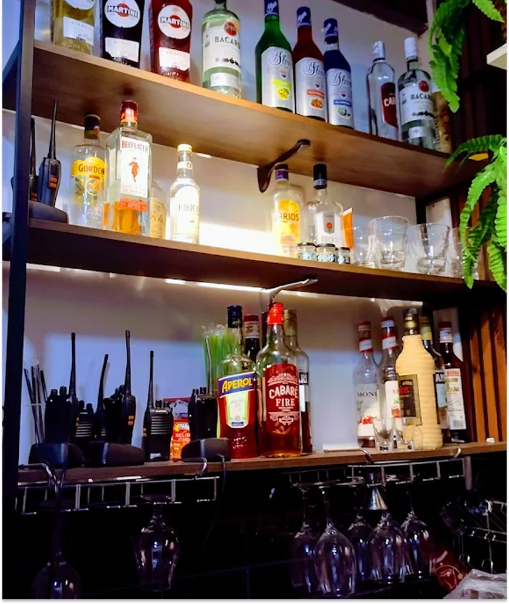
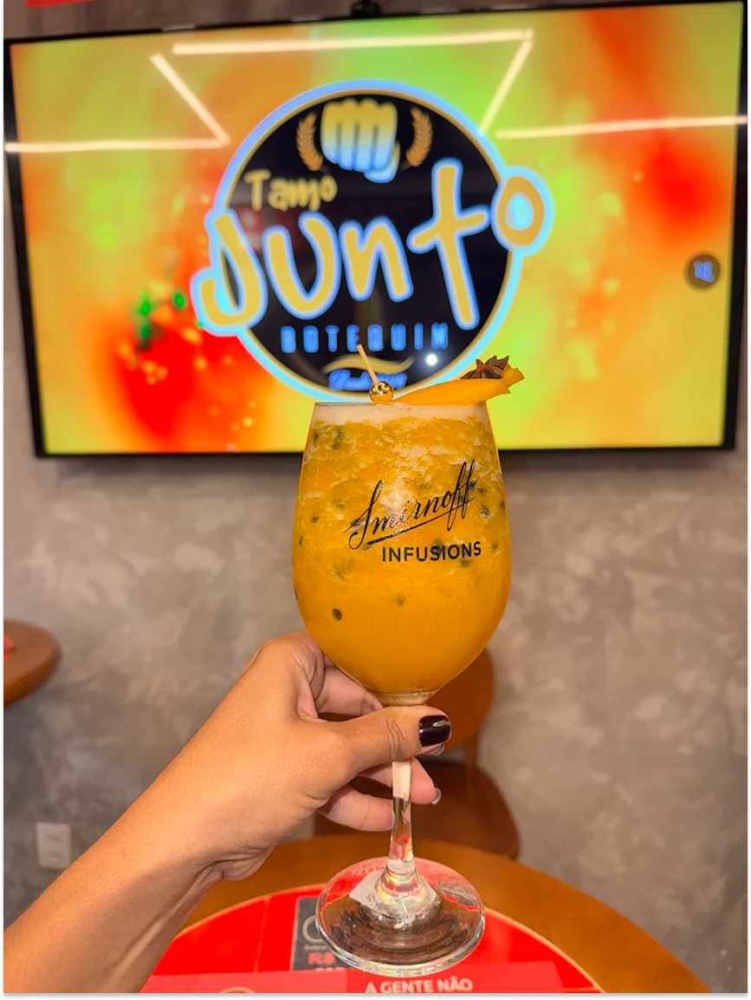
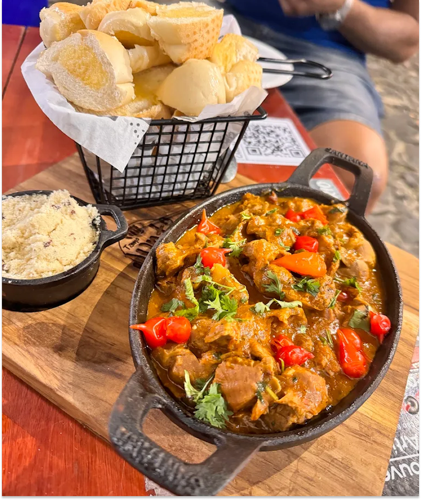

Saúde
Endereço: Largo da Saúde, 02 — Saúde, Salvador – BA, CEP 40040-620.
Funcionamento
Segunda-feira: fechado
Terça a domingo: 17h às 00h.
Telefone: (71) 9 8719-1420



Aqui, a mesa é o ponto de partida
O Tamo Junto Botequim reúne o que combina com encontro sem pressa: cerveja gelada, comida de boteco, espetinhos, petiscos, caranguejo e pratos para compartilhar.
É uma casa para ir com amigos, família, casal, ou simplesmente para transformar uma noite comum em boa conversa
TAMO JUNTO · SALVADOR
Encontre o Tamo Junto Botequim na Saúde, no Resgate e em São Marcos — com endereços, horários e rotas para chegar.
Endereço: Largo da Saúde, 02 — Saúde, Salvador – BA, CEP 40040-620.
Funcionamento
Segunda-feira: fechado
Terça a domingo: 17h às 00h.
Telefone: (71) 9 8719-1420
Endereço: Rua Andaraí, 723 — Resgate, Salvador – BA, CEP 41152-140.
Funcionamento
Segunda-feira: fechado
Terça a sábado: 16h às 00h
Domingo: 11h às 22h.
Telefone: (71) 9 8719-1420
Endereço: Rua Mata Atlântica I, 180 — São Marcos, Salvador – BA, CEP 41260-145.
Funcionamento
Terça-feira: fechado
Segunda e quarta a domingo: 16h às 01h.
Telefone: (71) 9 8719-1420
Quem passou, contou
“Comi deliciosos espetinhos (provei o de asa de frango e cupim), bem temperados, no ponto certo de assado... Cerveja bem gelada. Atendimento atencioso. Recomendo e pretendo voltar.”
Karol Senna · Google Review · Saúde“Bar excelente. Cerveja geladíssima, atendimento incrível, e música ao vivo top”
Felipe França · Google Review · Vale dos Lagos“Cerveja gelada, tira-gosto top, ambiente agradável, som de qualidade, o arrocha da sofrência, samba de primeira, e o melhor um atendimento de primeira.”
Adriano de Carvalho Ferreira · Google Review · Vale dos Lagoshoje combina
Fique por dentro das novidades do Tamo Junto Botequim! Receitas, dicas de harmonização, eventos especiais e muito mais para você que ama a cultura de boteco e a culinária baiana.
Descubra por que a cerveja do Tamo Junto é famosa por ser a mais trincando da cidade.